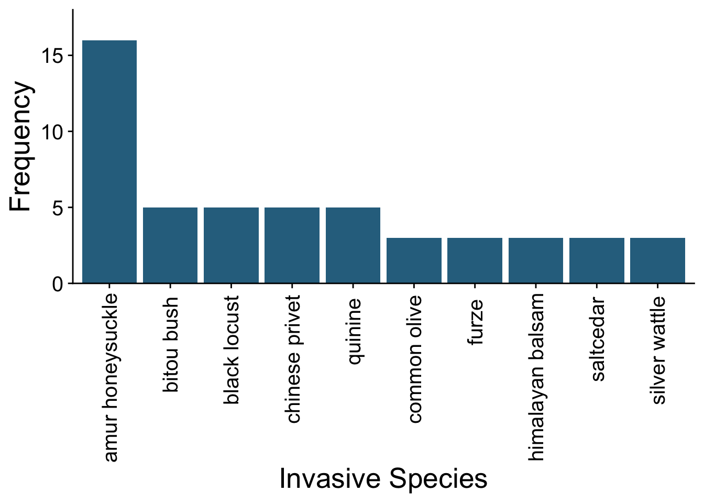
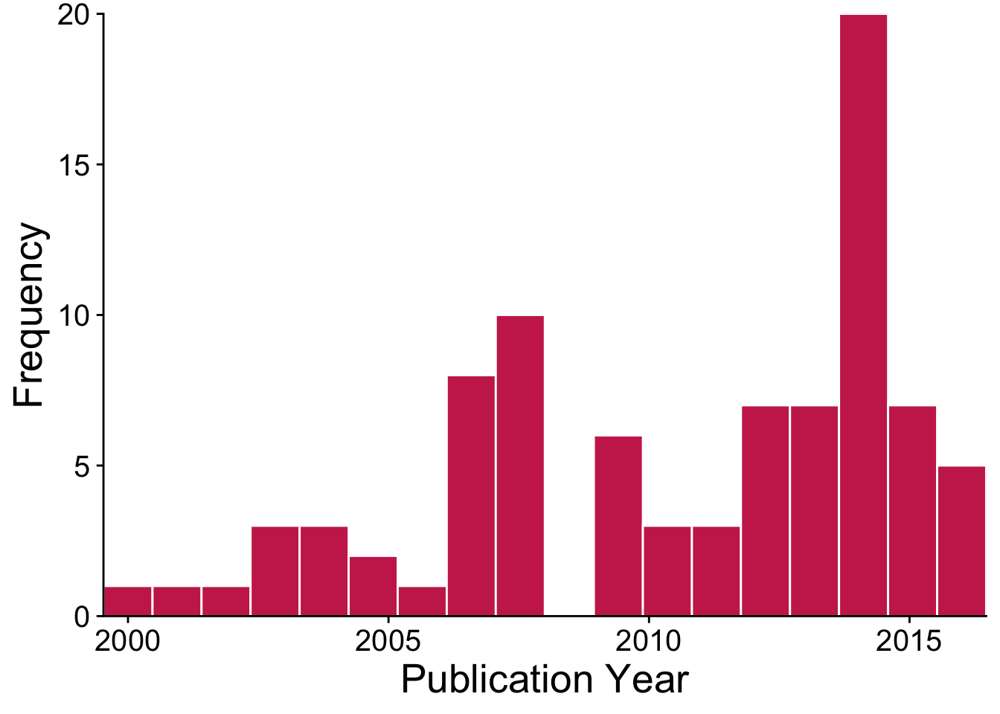

Meta-analysis of Ecological Data in R
2020-11-04
Preface
Motivation for this book
We created this book as a guide to conducting meta-analysis using ecological data in R. Ecologists are increasingly turning to evidence synthesis (i.e., systematic review and meta-analysis) as a way of describing and summarizing the published evidence base within sub-disciplines. There are helpful books that provide the theory behind meta-research in ecology (Koricheva, Gurevitch, and Mengersen 2013). There are also more technical guides that provide the R code for conducting meta-analyses, but these are typically built around datasets and methodology in medical (Schwarzer, Carpenter, and Rücker 2015) or social sciences (Harrer et al. 2019). We are excited to provide a guide for those conducting a meta-analysis in R using ecological data. We present methods that we have used in our own research, and of course indicate where we have built upon the work of other meta-researchers regardless of their primary field of investigation.
Intro to the data
The data we use in this book come from a meta-analysis by one of the co-authors (RCO) and his PhD advisor Dr. Julie Lockwood (Crystal-Ornelas and Lockwood 2020a). The data are the result of a systematic search for articles that investigate how invasive species native species richness. Language is particularly important to the field of invasion ecology (Mattingly et al. 2020), and so we start by describing what we mean when we say invasive species. The dataset contains information from ??Articles on ?? species of invasive trees. These trees havebeen intentionally or unintentionally moved to a new location from their native location. The invasive trees have established local populations, spread from this location and are now affecting their surrounding ecosystems in the new sites.
For more information about invasive species, we provide couple of references the authors find helpful.
- Invasion Ecology (Lockwood, Hoopes, and Marchetti 2013)
- Encyclopedia of Bioloigcal Invasions (Simberloff and Rejmánek 2011)
The data
Here, we import the data from google drive, and we can see from the output the classes of data (i.e., character or double) that R thinks our .csv file contains.
## Loading required package: tidyverse## ── Attaching packages ───────────────────────────────────────── tidyverse 1.3.0 ──## ✓ ggplot2 3.2.1 ✓ purrr 0.3.4
## ✓ tibble 3.0.3 ✓ dplyr 1.0.2
## ✓ tidyr 1.1.2 ✓ stringr 1.4.0
## ✓ readr 1.3.1 ✓ forcats 0.4.0## ── Conflicts ──────────────────────────────────────────── tidyverse_conflicts() ──
## x dplyr::filter() masks stats::filter()
## x dplyr::lag() masks stats::lag()## Loading required package: cowplot##
## ********************************************************## Note: As of version 1.0.0, cowplot does not change the## default ggplot2 theme anymore. To recover the previous## behavior, execute:
## theme_set(theme_cowplot())## ********************************************************url_for_data <- "https://drive.google.com/uc?id=1eL9f8pirn8TBhyuOs39Lfcpd3TYruvDG"
meta_analysis_data <- read_csv(url_for_data)## Parsed with column specification:
## cols(
## unique_article_identifier = col_character(),
## lastname = col_character(),
## publication_year = col_double(),
## invasive_species_common_name = col_character(),
## invasive_species_latin_name = col_character(),
## invasive_species_taxonomic_group = col_character(),
## invasive_species_trophic_position = col_character(),
## island_or_continent = col_character(),
## study_design = col_character(),
## SCImago_journal_rank = col_double(),
## time_since_invasion = col_double(),
## country = col_character(),
## mean_control = col_double(),
## SD_control = col_double(),
## sample_size_control = col_double(),
## mean_invaded = col_double(),
## SD_invaded = col_double(),
## sample_size_invaded = col_double()
## )Next, let’s inspect the data a bit, before we dive into the meta-analysis. As you can see from the code above, and the CSV file if you open it up, there are 17 different variables, or columns, in our newly imported dataframe. Some of the varaibles are the categorical pieces of data that we extracted from the articles that describe the article itself or the study’s focial invasive species.
For example, we can see the most frequently studied invasive tree species in our database.

The data that we’ll be analyzing in this book include publications on the impacts of invasive trees from 1999-2016. Here’s a visualization of how the published evidence base on invasive tree impacts has grown over the past two decades.

There are many more ways to display and summarize the data included in this CSV file. Meta-analysis statistics will most often use the numerical variables that are the key ingredients for meta-analysis (mean, standard deviation, and sample size). Our next chapters will focus on how to use these values to create meta-analytic models.
Acknowledgements
This book was created using the bookdown (Xie 2019). Thanks to the Lockwood Lab for motivating RCO to pursue meta-analysis in ecology and also for ping pong games. LCO, NKJ.
References
Crystal-Ornelas, Robert, and Julie L. Lockwood. 2020a. “Cumulative Meta-Analysis Identifies When Invasive Species Impacts on Richness Stabilize.” Ecology.
Harrer, Mathias, P Cuijpers, T.A. Furukawa, and D.D. Ebert. 2019. Doing Meta-Analysis in R. https://bookdown.org/MathiasHarrer/Doing_Meta_Analysis_in_R/.
Koricheva, Julia, Jessica Gurevitch, and Kerrie Mengersen. 2013. Handbook of Meta-Analysis in Ecology and Evolution. Princeton University Press.
Lockwood, Julie L., Martha F. Hoopes, and Michael P. Marchetti. 2013. Invasion Ecology. John Wiley & Sons.
Mattingly, Kali Z, Tara A Pelletier, Jessie Lanterman, Danielle Frevola, Benjamin Stucke, Kaitlin Kinney, Ross Schwartz, Drew Spacht, Graham Dixon, and Stephen M Hovick. 2020. “Disconnects Between Communicated Impact and Ecological Impact of Biological Invasions.” BioScience 70 (3): 252–63. https://doi.org/10/ggpcz2.
Schwarzer, Guido, James R. Carpenter, and Gerta Rücker. 2015. Meta-Analysis with R. Springer.
Simberloff, Daniel, and Marcel Rejmánek. 2011. Encyclopedia of Biological Invasions. Univ of California Press.
Xie, Yihui. 2019. Bookdown: Authoring Books and Technical Documents with R Markdown. CRC Press. https://bookdown.org/yihui/bookdown/.